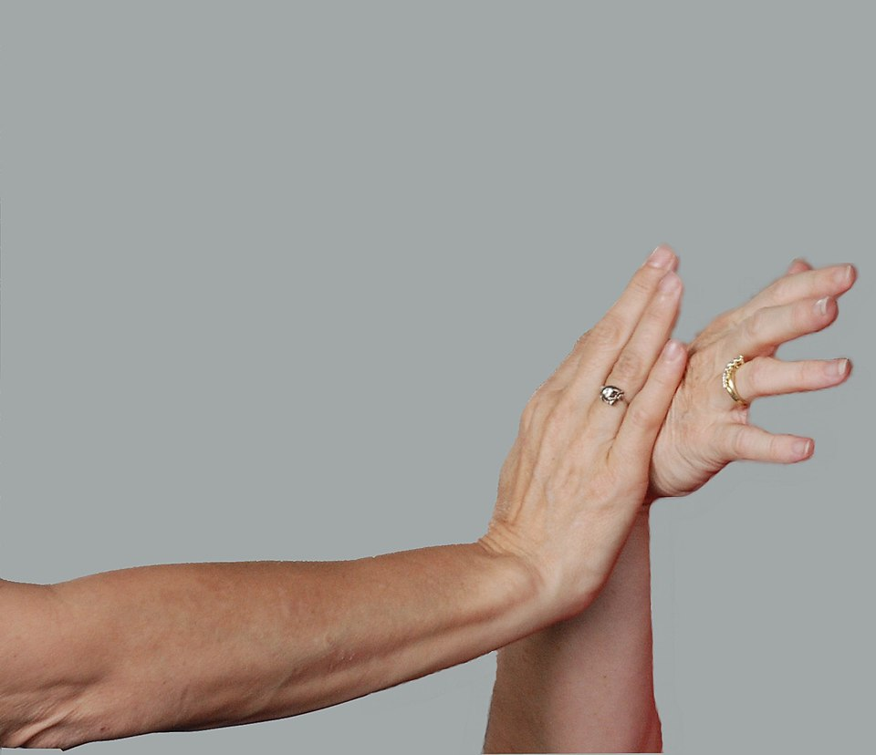

Qigong, oddech i rozgrzewka, pchające dłonie (tui shou) oraz korzyści zdrowotne
Aktualizacja: 2026-06
Praktyka tai chi to nie tylko formy. Towarzyszą jej ćwiczenia uzupełniające: qigong (praca z oddechem i energią), rozgrzewka stawów oraz partnerskie tui shou („pchające dłonie"). Razem rozwijają rozluźnienie, równowagę i wyczucie, a przy tym przynoszą wymierne korzyści zdrowotne.
Qigong (氣功 — dosł. „praca z qi") to szeroka rodzina chińskich ćwiczeń łączących ruch, oddech i skupienie umysłu w celu pielęgnowania zdrowia i krążenia energii (qi). W odróżnieniu od formy tai chi, qigong składa się zwykle z pojedynczych, powtarzanych ruchów lub statycznych pozycji, a nie z długiej, zapamiętanej sekwencji — dzięki temu jest prostszy do opanowania.
Jednym z najbardziej znanych zestawów jest „Osiem brokatów" (Ba Duan Jin, 八段錦) — klasyczny komplet ośmiu ćwiczeń, z których każde rozciąga i pobudza inną partię ciała (np. „podpieranie nieba dłońmi", „napinanie łuku do strzału", „sięganie do stóp obiema rękami"). Jest łagodny, krótki i często polecany jako wprowadzenie do pracy z oddechem.
| Cecha | Tai chi (forma) | Qigong |
|---|---|---|
| Struktura | Długa, zapamiętana sekwencja ruchów. | Pojedyncze, powtarzane ruchy lub pozycje. |
| Korzenie | Sztuka walki (każdy ruch ma zastosowanie bojowe). | Praca zdrowotno-energetyczna, bez celu bojowego. |
| Trudność nauki | Wyższa — trzeba zapamiętać cały układ. | Niższa — proste, krótkie wzorce. |
| Cel | Równowaga, kondycja, pamięć ruchowa, (dawniej) walka. | Krążenie qi, rozluźnienie, regeneracja. |
Każdą sesję warto zacząć od rozgrzewki i ustawienia oddechu. Fundamentem jest oddech brzuszny (przeponowy): wdech kieruje się „w dół", do brzucha, który delikatnie się unosi, a wydech jest spokojny i nieco dłuższy. Oddech pozostaje naturalny i niewymuszony — nigdy się go nie wstrzymuje.
Typowa rozgrzewka obejmuje delikatne rozluźnianie stawów w kolejności od góry do dołu:
Ważnym pojęciem jest „zakorzenienie" (rooting) — poczucie, że ciężar ciała swobodnie „opada" przez rozluźnione nogi aż do stóp, a stopy stabilnie spoczywają na podłożu, jakby wrastały w ziemię. Dobre zakorzenienie daje stabilność i jest warunkiem płynnego przenoszenia ciężaru w formie.
Tui shou (推手 — „pchające dłonie") to partnerskie ćwiczenie, w którym dwie osoby stykają się przedramionami lub dłońmi i, pozostając w kontakcie, łagodnie testują wzajemnie swoją równowagę i strukturę. To pomost między solową formą a praktycznym zastosowaniem zasad tai chi — tu uczysz się czuć żywą siłę drugiego człowieka, a nie tylko własny ruch.
Kluczowe umiejętności rozwijane w tui shou:
Tui shou jest bezpośrednim praktycznym zastosowaniem zasady „miękkość pokonuje twardość" i ćwiczeniem czterech podstawowych „energii" (peng, lu, ji, an). Choć stanowi podstawę zastosowań bojowych tai chi, w praktyce zdrowotnej ćwiczy się je bez rywalizacji — to wspólna nauka wrażliwości i równowagi, a nie współzawodnictwo o to, kto kogo przepchnie.

Ćwiczenie w parach: utrzymując kontakt, partnerzy testują nawzajem równowagę i strukturę.
Tai chi należy do najlepiej przebadanych „łagodnych" form ruchu. Dzięki połączeniu powolnego ruchu, przenoszenia ciężaru i skupienia przynosi szereg potwierdzonych korzyści:
| Obszar | Korzyść |
|---|---|
| Równowaga | Badania wskazują na skuteczność tai chi w prewencji upadków u seniorów — poprawia stabilność, propriocepcję i siłę nóg. |
| Stres i samopoczucie | Skupienie i spokojny oddech sprzyjają redukcji stresu, lepszemu nastrojowi i jakości snu. |
| Stawy i mobilność | Łagodny zakres ruchu utrzymuje ruchomość stawów bez ich przeciążania — odpowiednie także dla osób starszych. |
| Kondycja i postawa | Wzmacnia nogi, poprawia świadomość ciała i pomaga utrzymać wyprostowaną sylwetkę. |
Tai chi jest niskoobciążające i dostępne niemal dla każdego, niezależnie od wieku i kondycji. Jak praktykować w domu, by czerpać z tych korzyści: